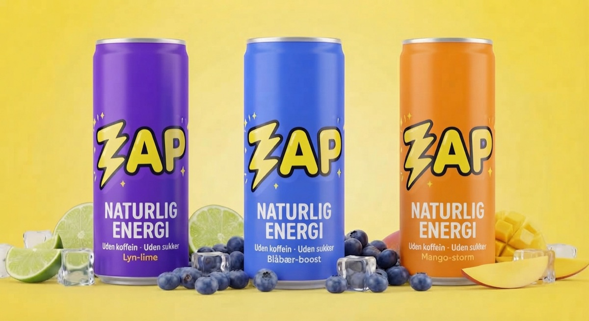
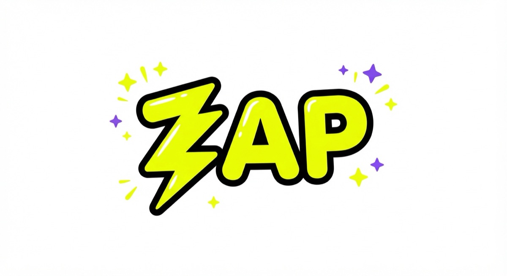
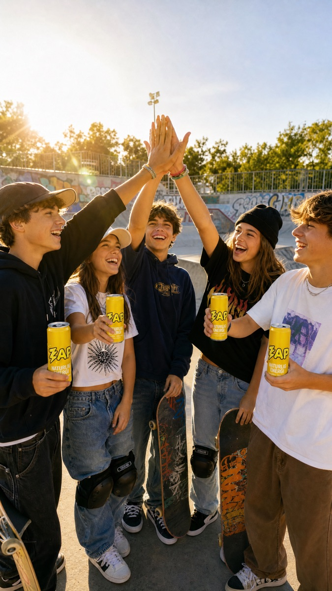

3. Semester · Workshop
Creative AI Workshop
Vi lavede en hel kampagne med AI for ZAP, en energidrik til børn uden koffein og sukker.

Casen
Casen var med vilje provokerende: Opfind en ny energidrik til børn under 16. Vi vendte den om og lavede en drik, der ser lige så sej ud som de rigtige, men er uden koffein og sukker. Alt indhold skulle laves med AI.
Research og beslutning
Der er ingen lovpligtig aldersgrænse i Danmark, men Hjerteforeningen og Lidl går efter 16 år, og Norge har indført en grænse. Vi brainstormede tre retninger og valgte ZAP, fordi den både løser casen og tager stilling til problemet.
Logo og dåser
Ideogram krævede betaling, så vi skiftede til Gemini. I anden version af logoet bad vi om en lilla skygge, så begge brandfarver kom med. Derefter lavede vi tre smage: lime, blåbær og mango.
Først stod der “0% koffein · 0% sukker” på dåserne, men det fik drikken til at ligne en light-sodavand. Vi ændrede budskabet til det, drikken har: Naturlig energi.

Kampagnen
- Kampagnebillede: Gemini.
- To videoklip: Runway, fordi Kling havde lang kø.
- Jingle: “ZAP i hånden”, lavet i Suno.
- TikTok-reklame: 15,6 sekunder i højformat.
- Landingsside: Claude.

Det lærte vi
- Gratis er ikke altid gratis, så hav et backup-værktøj.
- AI staver stadig forkert i billeder, så teksten skal altid tjekkes.
- Små, præcise rettelser giver bedre resultater end at starte forfra.
- AI kan hurtigt lave overbevisende reklamer til børn. Derfor valgte vi et produkt, vi kunne stå inde for.